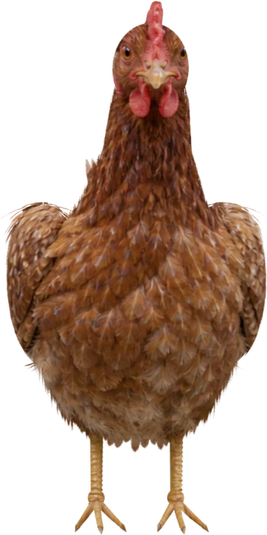
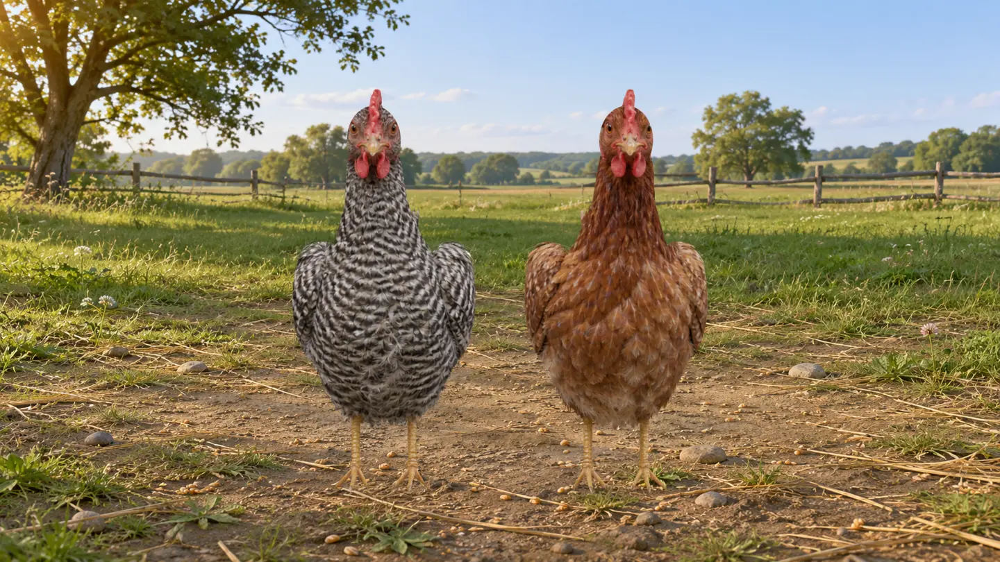

Nuestra historia
Todo empieza en Martín Miguel.
En este pueblo de Segovia nace El Palomar. El proyecto recupera una forma cercana de producir huevos, con el cuidado diario de las gallinas en el centro.
Conocer la historia ↗
Martín Miguel / Segovia
El proyecto
En El Palomar criamos gallinas camperas en Martín Miguel, Segovia. Cuidamos su alimentación y su entorno a lo largo de todo el ciclo de cría.
Nuestros productos
Del más pequeño al más grande. Elige un huevo para ver su peso y sus formatos.

Nuestra historia
En este pueblo de Segovia nace El Palomar. El proyecto recupera una forma cercana de producir huevos, con el cuidado diario de las gallinas en el centro.
Conocer la historia ↗